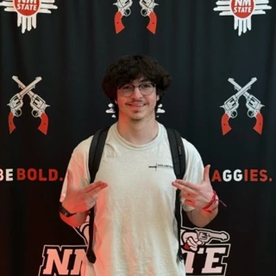

Sebastian Salgado
Halite Studio
A computer science student who builds websites and games under Halite Studio, from Las Cruces.
Founders
Knuckles is made in Las Cruces, New Mexico by Sebastian Salgado and Preston Hager.

Halite Studio
A computer science student who builds websites and games under Halite Studio, from Las Cruces.
Game developer
A developer from Las Cruces, New Mexico, and the publisher of Knuckles on the App Store.